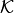
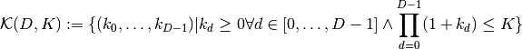
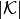
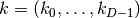
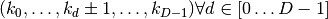
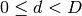
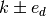
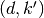
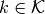

HyperbolicCutShape¶
About the HyperbolicCutShape class¶
The WaveBlocks Project
@author: R. Bourquin @copyright: Copyright (C) 2010, 2011, 2012 R. Bourquin @license: Modified BSD License
Inheritance diagram¶
Class documentation¶
- class WaveBlocksND.HyperbolicCutShape(D, K)¶
This class implements the hyperbolic cut basis shape which is a special type of sparse basis set. A basis shape is essentially all information and operations related to the set  of multi-indices
 . The hyperbolic cut shape in
. The hyperbolic cut shape in  dimensions
and with sparsity
dimensions
and with sparsity  is defined as the set
is defined as the set
- contains(k, extended=False)¶
Checks if a given multi-index
is part of the basis set .Parameters: k (tuple) – The multi-index we want to test.
- get_basis_size(extended=False)¶
Returns the size  of the basis. The size is the number of distinct multi-indices
that belong to the basis
.
- get_description()¶
Return a description of this basis shape object. A description is a dict containing all key-value pairs necessary to reconstruct the current basis shape. A description never contains any data.
- get_dimension()¶
Returns the dimension
of the basis shape .
This is defined as the number of components each multi-index
 has.
- get_limits()¶
Returns the upper limit
which is the same for all directions  .
.Returns: A tuple of the maximum of the multi-index in each direction.
- get_neighbours(k, selection=None, direction=None, extended=False)¶
Returns a list of all multi-indices that are neighbours of a given multi-index
. A direct neighbour is defined as
.Parameters: - k (tuple) – The multi-index of which we want to get the neighbours.
- selection (string with fixed values forward, backward or all. The values all is equivalent to the value None (default).) –
- direction (int) – The direction  in which we want to find the neighbours .
Returns: A list containing the pairs .
- get_node_iterator(mode='lex', direction=None, extended=False)¶
Returns an iterator to iterate over all basis elements .
Parameters: - mode (string) – The mode by which we iterate over the indices. Default is lex for lexicographical order. Supported is also chain, for the chain-like mode, details see the manual.
- direction (integer.) – If iterating in chainmode this specifies the direction the chains go.
- extended (bool) – Do we want to iterate over the extended basis shape. Default is False. Note that this has no effect in chainmode.